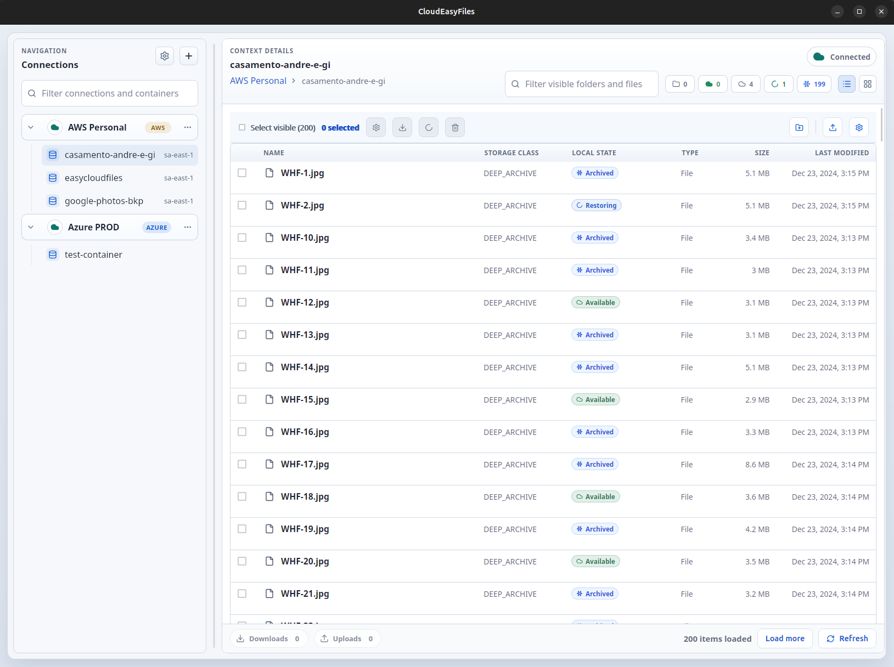
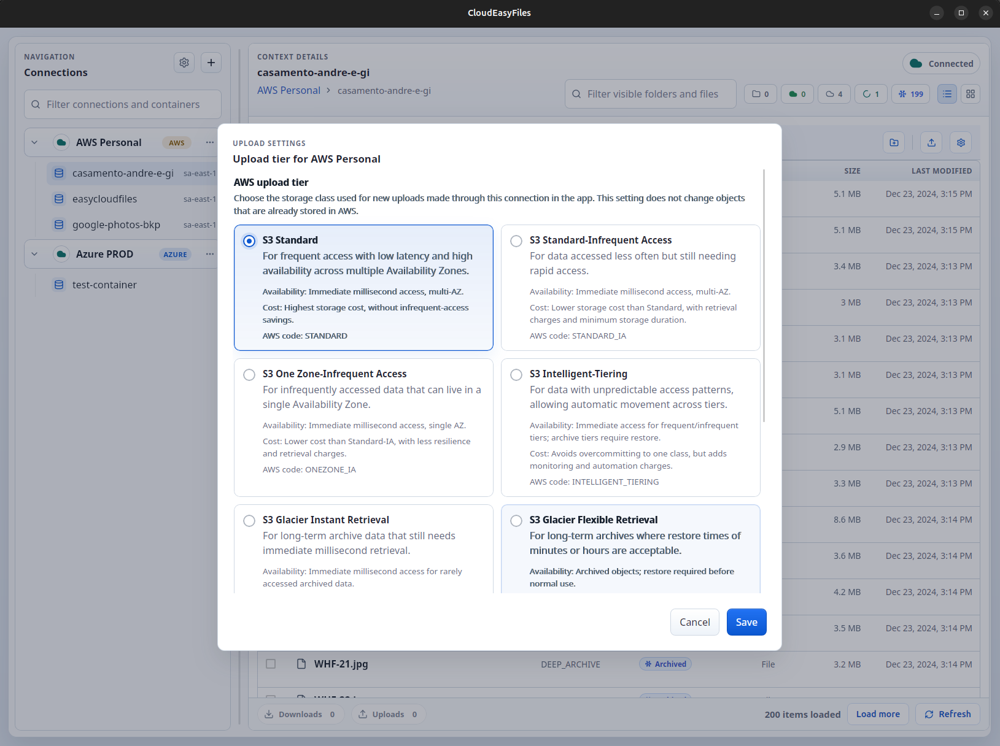
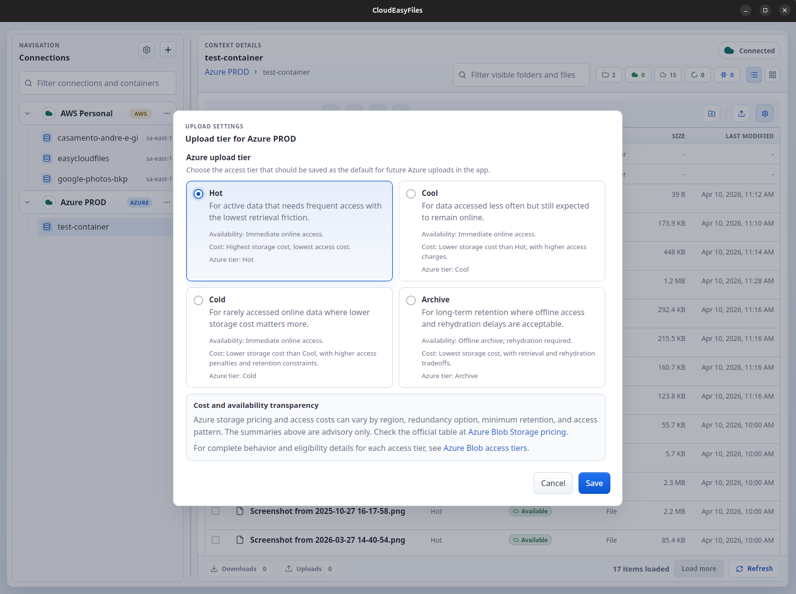

Define the product
Problem framing, product direction, constraints, and edge cases are written before code moves.
Cloud File Explorer
CloudEasyFiles is a desktop explorer for cloud storage, built to make browsing, restore status, and file delivery clearer for real users. Today it supports AWS S3 and Azure Blob Storage, with room to grow into other providers over time.
Core Workflow
The app keeps operational work visible instead of hiding provider constraints behind fake parity. The explorer stays central while AWS and Azure behavior remains explicit where it matters.
Clarity for cloud file access and archive retrieval, not abstraction for its own sake.

Provider Detail


How It Is Built
CloudEasyFiles is also a documented engineering case: specs, ADRs, and implementation plans stay primary while AI tools help accelerate delivery.
Built by
Software developer with more than 15 years of experience across backend engineering, cloud platforms, serverless systems, software architecture, and multi-platform product delivery.
If the project is relevant to your work, if you want to suggest an improvement, discuss an idea, or explore a partnership, feel free to get in touch.
Problem framing, product direction, constraints, and edge cases are written before code moves.
ChatGPT and Codex support implementation inside a documented engineering process.
Architecture decisions, specs, and product notes remain visible and reviewable in the repo.
Documentation